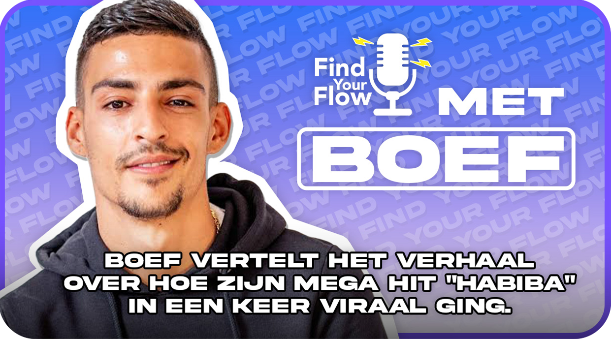

"HUSTLE YOURSLEF TO YOUR FLOW"
-
Wie zijn wij?
Wij zijn Fernando en Ouassima aka de wekelijkse vaste stemmen in Find your flow de podcast. Wij zijn op een zoektocht naar wat artiesten hebben gedaan om te slagen in deze moeilijke industrie. Hier nemen we jullie in mee door wekelijks vragen te stellen aan de artiesten om erachter te komen wat zij hebben gedaan, om te staan waar ze nu staan en wat het hun gaandeweg heeft opgeleverd.
-
Kijk en luister hier de eerste aflevering
